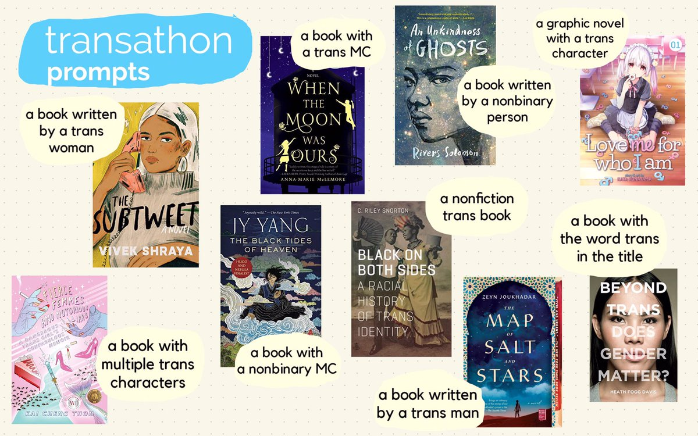
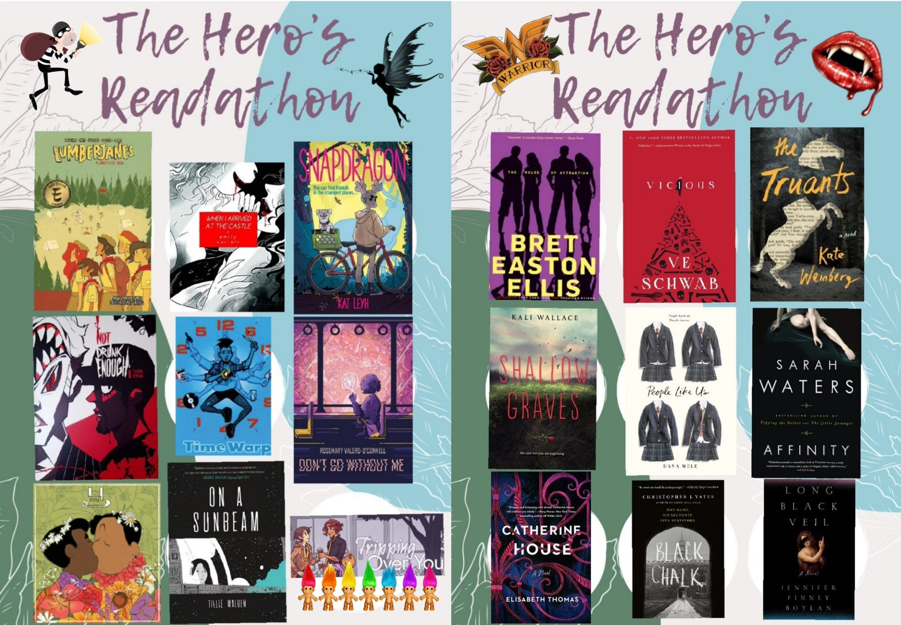

READATHON TBR
Transathon TBR!
JUNE 27, 2020

Transathon is a readathon that centers trans & nonbinary authors and stories for the month of July created by Ocean! Learn more about the readathon, find book recommendations, and see the bingo board at the official Transathon twitter account. I'm super excited to participate and am hoping to read a book for all nine prompts.
READATHON TBR
The Hero's Readathon TBR troll/fae thief & vampire warrior
APRIL 30, 2020

The Hero's Readathon is a D&D-inspired readathon created by Sage from Sage Reads! (They also made the bingo board I edited above.) To participate in this readathon, you choose a character type and character class, which affects what you read for the challenge. Then, based on those limitations, you follow The Hero's Journey, which consists of nine reading prompts. Because I loved this idea so much, I chose two characters: a troll/fae thief and a vampire warrior!
BOOK REVIEW
The Doctor's Discretion by EE Ottoman - Transgender M/M Historical Romance
MARCH 23, 2020

In this historical romance, a pair of doctors help a trans man escape hospital imprisonment while navigating their new relationship. Although I appreciate what this book was trying to do in terms of bringing more diveristy to the genre, the plot became too complicated for a 200-page book and the romance was not developed enough to keep me hooked.